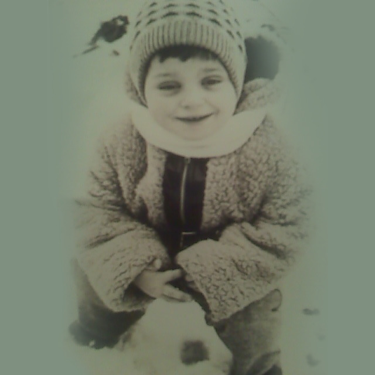
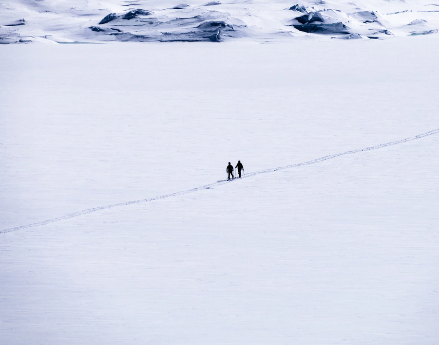

May 23rd 2020, 5:08:49 pm EDT

Listen
Universe created Evolution, Evolution created Consciousness,
Consciousness created Humans, and Humans created Philosophy.
The word Philosophy, comes from the greek Philosophia,
it means Love of Wisdom.
It comes from the time when Great Beings first begun emerging among us,
they rejected inauthenticity, violence, contradiction, and imaginary things and creatures.
These were the First Superheroes,
they were often attacked.

This is Socrates, he taught the children power of Wisdom,
he was sentenced to death, and he did not run, he died, for Wisdom.
Wisdom is self correcting,
it eventually went against the State and its imaginary gods, and so the State went against him.
He outlived the State by becoming immortal,
he is often seen as the Father of Philosophy, but there were many other thinkers.

This is Hepatia, her tragedy, marks the end of the first Philosophers,
the world plunged into Dark Ages.
As hard earned as Wisdom is, as long as it takes to cultivate and grow,
the criminals can take it away in a cold flash of steel.
Her tragedy, should not be forgotten, the Noblest become a target,
to the fractured, and blind, and jealous.
For now, Wisdom is no longer seen as the Highest there is,
today, opinion seems to matter as much as fact.
There are calls to "teach controversy", for "equal debate",
to "show both sides", to "let the reader decide".
Falsely presenting a broken opinion,
to be on par with the reality and fact that helps Humanity Grow.
It is an old trick, it is cheap, and self assembling,
it emerges on its own from poverty, inequality, suffering, blindness, and pain.
Being conscious and self aware, is not quite enough,
because of Liars, Thieves, Criminals, Murderers, War, and even Poverty.
Wisdom is like a higher level Operating System for Humans,
it enhances our consciousness, it grants us unique powers.
But, Every Human, each member of the Grand Human Family,
needs to see Wisdom as a necessity.
Until then, racism, xenophobia, inequality, poverty, and darkness,
will keep us apart.

The Stories of Superheroes are rooted in lives of Philosophers,
because a Philosopher cannot be hurt like the ordinary men.
Philosophers survive for thousands of years in text,
in stories, in paintings.
They survive by sharing Wisdom,
that make us stronger, that enriches us, that we each yearn for.
When you read the words of a philosopher,
she or he comes round, and in a way they keep you company.
Socrates knew that,
and he knew he needs to send a powerful message far into the future.
An important being, died for something important,
he is signaling, that Wisdom is Your Right.
He was a Soldier,
he found a way to repair the word.
And it was,
Love of Wisdom.
Once you begun paying attention to it all,
a constellation of stars will begin assembling in you.
Each star will repair and strengthen all the others,
it will bring you health and clarity.
Your contradictions will begin resolving,
by rejecting and ejecting that which makes no sense.
It will help your decision making,
it won't let you move forward when two things oppose.
It will keep you in place,
until you reject the one that is not fact.
Where all the other stalks fracture,
Wisdom will help you bend in the colder winds of change.
Foresight helps you combine knowledge,
to construct events that are yet to unfold.
Moreover, it helps you construct the correct path ahead,
and reject whatever else may come.
The Power of Foresight does not end with the individual wielding it,
it can extend to guiding the word to the correct its paths.
Heroism is in part is about learning what not to do,
helping others requires solving their problems, and thus you learn life.
But the greatest of insights are found in Memoirs worth reading,
where they are placed in correct context.
With enough insight Crime for example, transforms from an impenetrable state of mind that it is,
to our need to create Walls of Prevention, so that people don't end up blind.
Punishment and Revenge is not a way to treat a Human Being fractured by poverty,
or violence, or even hunger-for-food. Only prevention can work here.
The power of insight shows you that while you can't go back in time,
you can prevent the little ones from ending up in the same place.
In that way, you take the pain of those Punished and use it for a thing that matters,
preventing children from following in their footsteps.
And we get to feel others,
we get to feel when they have been Wronged.
And we get to feel what they felt, when times got tough,
and the power of Compassion makes us a Family.
Who was it that gave George Martorano that little pencil,
power of compassion is incredibly complex.
You hold hands with every wronged being on Earth,
those looking to their Favorite Star, wondering if someone else is looking there too.
We are, we all are, we are there with you,
You matter, your heart mattes, your mind matters, your life matters.
And in Wisdom we will fix all of it,
whether we are ready to recognize that or not, we are a Family, and as One, We'll fix it all.
In that path we slowly walk together,
towards Happiness and Fairness, and Joy.
We will erase poverty and slavery with Universal Income and a Free Home with a picket fence.
We will erase crime with Care and Prevention, and Fairness.
We will erase war, blindness and stupidity, with Family Love and Wisdom.
We will erase all problems that plague the Human Family, it is what a family does.
One day, the world will stand united in fact,
as opposed to being divided by opinion.
Not even the Universe can stand in our way,
our way is the Human Family Way.
Like Wisdom,
we are Unstoppable.
May 22nd 2020, 5:36:47 pm EDT
Listen
Why does Philosophy seem so foggy,
so unclear, and uncertain.
Living above yourself, transcending your limits,
puts you in a wiser state, more complex state, harder to understand state.
I can't describe that directly,
but I can describe it by subtle analogy to other things.
You know how your Dad questionably, pokes around a car engine,
and yet all of that seems a bit foggy?
Do you remember what it was like to jog the first time,
and then you just kept going?
Can you imagine your first 18 miles at the Appalachian Trail,
and can you see your last 18 miles as you near Katahdin.
You know how mathematics sound impenetrable?
Until you become a mathematician?
There are gaps, discomforts, vocabularies, perceptual frameworks,
that stand between you and the wisest you.
You have to cross those things,
to unfog your mind.
Learn to jog, to sprint, to body build,
and find a pathway to your best self by subtle analogy to training.
Learn to backpack,
to walk out in front of a lone wolf, let your eyes connect in loneliness and familiarity.
Snarl down a Mountain Lion,
with a God Like Growl, out of you entire life force, and culminating in a Wild Howl.
Let your Lycanthropy belch a low rumble as you stand your ground,
to the test of a charging Black Bear.
And learn from the Calm and Power of a Grizzly Bear,
Ursus Horribilis.
Or, become an artist. You don't need a charging bear to learn.
You can use clay, or canvas, or music.
There is no finer way to push loneliness away,
than to sculpt the meaning of touch.
And there is no better way to learn courage,
than to paint a chain of works that inspire to motion.
And music need not make someone cry to be powerful,
make the beat move your own feet, as you run your first ultra.
Consider how simple a Desktop in your Operating System is,
and yet, how perfectly impossible it is, to drag the icon out of the computer.
It is right there, you can wiggle it,
and yet it is trapped in a prison, of invisible walls.
And consider, how different you are, from all the people you have met,
how you don't even smile at the things that make them laugh.
How not a single person of out the Eight Billion,
could possibly take your place.
How often it feels that all the people around you are sleepy,
how some seem different, because they could not do, what they do, if they were not wide awake.
To integrate with wisdom, you cannot read the same books others read,
your mind represents a perfectly unique constellation of stars.
To integrate with wisdom,
not only do you have to indirectly wiggle around by subtle analogy to other things.
But you have to fish out just the perfect morsels that fit you,
in just the perfect sequence, out of a unique collection of mutually reinforcing works of Philosophy.
You start in the beginning, with Survey Courses, as these outline the most brilliant ideas first,
there you can recognize thoughts that fit you, that you already had in your constellation.
Organized Education, poisons your confidence in education, because everything they teach,
is in an inhuman, synthetic, and impersonal sequence.
Moreover, the easily forgotten and fragile clusters of incomplete information,
aim to build on one another, they guarantee you won't understand, and will only overwhelm you in the end.
The celebrating of a Diploma, is a sacred ritual, that has been erased, and replaced,
with a more sugarcoated "I am finally out".
This is a perfect recipe for bondage, blindness, weakness,
and worse.
We must not allow a fake sugar pop triumph,
to replace the Real Triumph or Knowledge and Wisdom.
It can only get worse,
a day will come when the Libraries will close.
School and Library, above all, were meant to be a symbol,
an extension to your own self education.
Your Education,
the pathway to Peace, Safety, Security, Self Control, Harmony, Enlightenment.
What has occurred to cause the fog, is a drop of packets of information,
we are too complex, the world is too complex, parenting is too complex, teaching is too complex.
It can get worse, if we continue celebrating false graduations, and fake education,
if we keep forgetting that our family, has Eight Billion members and each must grow up for real.
The solution is to remind ourselves, that growing up is not about feeling like an adult,
but rather Transcending our Limits, and Pushing Through gaps, towards Wisdom.
We face problems that can only be solved by Intellectual or Cultural Unity.
The Problem of War, is solved by Education, Wisdom, and Unity.
The Problem of Education, is solved by Helping Everyone to a Fair Start.
The Problem of Crime, can be Solved by Mental Heath Care, and Prevention.
The Problem of Poverty and Slavery, is Solved by Universal Income.
All these problems are our problems, and the solutions are ours as well.
But they rest across a Gap, a gap that Humanity must cross.
And the next step,
is your step.
Nothing worth your precious time, can be faked, or made up, or make believe,
it all has to be Authentic, Powerful, Guttural, Raw.
It will hurt in the Muscle and Bone,
but eventually you'll forget to pay attention to what is unimportant.
You are not to be taught that you are dime a dozen,
and that they just can't find a job for you, because you don't fit or conform.
People believe this nonsense,
because they don't have anything to draw from by subtle analogy.
That is why we must challenge ourselves to Great Deeds,
to acquire the experiences necessary to tell Wisdom from Waste.
When you hear someone putting you down, pushing you around, belittling you,
you are to leave, because that someone has fractured and broke, and are now ill.
It is the oldest and sickest trick,
to convince someone they don't matter.
They do it for personal gain, money or laziness,
to people who do not have a library of Grand Experiences from which they can draw wisdom, by Subtle Analogy.
Get Up.
Find your temple of solitude, The Two Beautiful Trees, The Bridge Over Hudson River,
The Highway Overpass, The Starry Beach where the Stars Come Out at Night and mingle with Starfish.
And know, that you are a Child of The Universe, first,
That! is your background.
Now face Humanity anew,
out from the edge of the Universe.
Look,
look at all those things that made you small.
Look how unimportant the inauthentic is,
how fragile those words that upset you really were.
And pay attention, to the real problem,
how easily you were tricked and mislead.
That cannot go on,
you are not a push around.
I wish you knew how Powerful you really are,
how easily you learn at your own pace in the sequence that fits you best.
How All Too Human, all too familiar, all too easy,
the acquisition of wisdom really is.
Not all Adults are defined by Outspoken Wisdom, some find Greatness in Love Returned,
and what a Great Power, can those Two even make a mistake?
I don't think there is anything other than Love, that can substitute for Wisdom,
it is both The Love of Two, and The Love of a Big Mother in a large family,
a Mother that always brings hugs, warm meals and Wisdom.
But, True Love is rare, so while you search, you must also grow in Wisdom,
from now on, you will have to learn to tell the children apart from the adults.
And not by looking at how old they are, or how well they dress, or how sharply they move in their environment,
you will now look at their Authenticity, and Content of Character.
No one who lacks in Authenticity, or has little Content of Character,
has anything to contribute to you life, certainly nothing negative.
Hope for them to recover, and become wise, and healthy,
let them know that they are a Child of The Universe, and they count - but go.
Don't let anybody hurt you,
don't let anybody hurt your heart, or mind.
Go!
because you need your heart and mind, to grow.
Go!,
with the certainty of knowing that you are more.
Go!,
so as long as you Rise you won't be lonely for long.
Go!
because there has never been a way other than forward and up.
Go!
and don't be scared, all great journeys start with little things.
The Others, who went through the same,
are with you in Spirit.
So many invisible battles have been fought,
and as much triumph gone unnoticed.
The Warriors are everywhere, and they stand by your side,
you are in company of Great Heroes.
Climb by subtle analogy to the triumphs already had,
rise to the highest of mountains.
You are Meant to Become a Great Being,
and You are meant to remind others to follow a similar path.
Rise, and you will be well on your way,
Humanity only grows, when people like you tear down those thin invisible walls.
Wherever you are right now, begin transcending your limits,
no matter how small, each will help you learn more.
With each new success more pathways will become visible to you,
you are not trapped, you are just at the beginning of your journey.
It is hard to see it all because you are still learning,
but it is easy to read or listen to books, and inherit great visions from others.
It will never get easier,
but you will grow greater, to a point where ease will become irrelevant to your existence.
You must use your Heart and Mind to learn all the lessons ahead,
no one can teach you, you must find your own books.
By Subtle Analogy,
Rise to Your Greatness.
May 21st 2020, 7:34:04 pm EDT
Listen
Nothing is what it looks like,
because Human Beings, are not of the world of sequentially predictable machines.
Human Beings emerged, out of infinitely increasing complexity,
by rules of infinite accidents along lines of fuzzy principles.
In a word, we are here because the Universe mixed it self for so long
that the failure for life to occur became inconceivable.
And, we want to believe life emerged, on Earth,
just like we wanted to believe that earth was the center of the Universe.
And we want to believe that Earth was the first to have life,
my goodness, how much more special could we be, the first in the Universe.
Universe is a large place, that has been around for a long time,
it is better not to think of anything cosmic, as that! special.
But there is one exception.
Once you come down to Earth, come up to Life, and look then Into The Conscious Self Aware Mind,
that is no longer a common occurrence.
There is nothing normal about it,
we are now at the limits of what the Universe could possibly conceive of.
No machine or hybrid can measure up to the raw power of unleashed consciousness.
Nothing partially conscious, can know the depth of Sadness,
nothing less than conscious could know the Miracle of Happiness.
We are used to thinking of ourselves as work horses,
great locomotives that can plow through Pandemics, or a Broken Heart.
But that is a temporary oversimplification just to keep visions clear,
born of a finely tuned mind that can narrow all views down to the important bits.
Focus and selective attention is not a limitation of our mind,
it is a feature that clears away unimportant things.
When we need recall, we can have it in full,
just imagine your favorite place, and trace along the walls.
Every window, picture, appliance, and outlet, all the important knickknacks are all there,
we don't have memory problems, we don't need better brains.
The convergence that we need is not about integrating with technology,
but combining the good parts of our cultures, so that the world can learn towards Peace.
Without that shared wisdom, people are easily tricked to believe in conflict,
into the belief that there are borders, and across borders they must fight.
By not helping each other to understand how special and unique we each are,
there grows a vocal minority of machine like minds, that think in mechanical terms.
They add to get more, they take to be more,
they divide to make enemy, and subtract enemy to spread more.
They think they are a cog, in a bigger machine,
but there is no machine, just that blind mind.
It is OK to focus on just a few things so that we may grow, and grow in wisdom too,
but it is not OK to live in some narrow channel for simplicity sake.
It actually isn't OK to do things to simplify,
complexity only moves in one direction.
There is nothing healthy that can be done to un-mix a cup of tea,
there is nothing useful to be found in moving backwards in time.
Complexity grows, and to make sense of growing complexity,
we cannot hope to simplify it, but rather adapt our minds to grasp it more efficiently.
The World must Go Forward, Move Forward,
what needs to change is out Tolerance for Bad Ideas.
But growing up to the challenges of ever increasing complexity requires wisdom,
and wisdom cannot be manufactured, it must be grown.
Wisdom is a product of Love,
not the Beating Heart, but the Human Capacity to Love the Universe, The World, and The Human Family.
My Dear Readers,
Becoming a Great Being, becoming Wise and Enlightened,
is the actual definition of being an Adult.
Pretending to be an Adult, by acting mature,
is to make a fool of yourself, probably while throwing away what makes you Beautiful.
Throwing away your Sweetens, and Foolishness, and Innocence, and all the Smiles that happen for no reason.
That's not growing up, that's the worst thing you can do to your self, and is probably very unhealthy.
To become an Adult,
is to become a Philosopher.
Philosophy is about Loving Wisdom,
is your Wisdom not the most precious thing within you?
Universe, the biggest thing there is, in all it's might and complexity,
a thing so powerful, that it may in some part, travel around it self in time.
It can't do wisdom, best it can do is Evolution,
but it can't do wisdom, it cannot know, it doesn't know such a thing could exist.
And each and every one of us has the capacity for it,
a volitional faculty to bring up a folder of your Noblest Thoughts.
You are more powerful than the Universe,
the only thing that can keep you down,
is you never becoming aware of your Great Power.
I know Superman comes to mind when you think of Superpowers and Superheroes,
But do think Superman is actually super because he can lift or fly?
If Superman was as super as he needs to be, he would become Human,
and build Schools to prevent War a Hundred Years before it happened.
He'd then age, so that the Little Ones,
would listen to him without dismissing him as a Genius that lives on cloud nine.
He'd then let the little ones build with a thousand minds,
what his one mind, couldn't grasp.
The greatest of superheroes, would encourage us to build things,
that help the world to converge,
on Cultures of Wisdom that leave bad ideas behind.
I ask you, My Dear Readers,
to begin moving towards becoming Great Wise Beings,
towards growing up by means of searching for wisdom,
growing all the way up so that you stand as Authentic Adults.
And rising to the challenge of inspiring a thousand minds,
to accomplish what your one mind, can only barely conceive of today.
May 20th 2020, 11:22:12 pm EDT

Listen
With each little triumph, we add to our treasures,
and it grows over time, it grows beyond measures.
Sometimes, it all starts in loneliness,
but it quickly fills up as it reaches silliness.
And so, we carry our fancy treasure chest,
we take it with us on every quest.
It is not possible for it to get lost,
and nobody else can touch it - at any cost.
In no way could it ever be sacrificed,
and no robbers could ever stage a big enough heist.
Little chest in a safe place deep in our heart,
it serves to light the fire that fuels our art.
It prevents us from walking in reverse,
it helps to make our existence more diverse.
It also adds a great deal unto our beauty,
as it drives us to create out of love, and not mere duty.
All those petite little things that make us proud,
also make us stand out in a crowd.
So it also serves as a lighthouse with a bright beam
that lights the way betwixt us, and our dream.
I think one reason why nobody ever mentions it,
is because it is too sacred, to just talk about it.
But I want to remind you, my Dear Friends,
that sometimes we need to look through this lens.
Your treasure chest will show you,
a picture of you that is most true.
Oh, don't worry if you have only one thing,
it is still a treasure, it still makes you a Queen or King.
We all have a few simple treasures when we start,
but they grow as we use our heart to turn our life to art.
May 18th 2020, 10:39:25 pm EDT

Listen
Well, from the first moment on,
we are asked if we should live in harmony.
We are still very young,
barely know of the world.
And already the question of harmony comes,
and in harmony we learn, and thrive.
Away from it, we'll be interrupted,
and feel lost in the void.
It is a simple choice,
but out minds are not ready to make it.
Often we forget.
We forget about our little gardens,
and all the little walks.
We forget how amazing it felt,
to stand on the wing of a plane.
We forget the taste of popcorn at the Zoo,
or even how enormous Zoo felt.
We forget pebbles at the river,
and mischievous squires at the park.
That little dog with a bark,
that scaredy kitten always hiding in the dark.
Our collection of unused keys,
and the box of bottle caps we collected with ease.
We forgot our Lego and the old bike,
with that seat that we used to really like.
We don't remember the Palaces and Castles,
that we used to love, and those swords, that fit us like a glove.
Everybody else came around,
acting like they know the ground.
But, this was our gift from the Universe,
an affinity for flowering gardens, and little passage ways, and all those flying planes.
It was a key to unlock our mind,
to understand the zoo, and our size in the universe, connect with pebbles at the beach.
It is a pathway that fits us best,
to love little creatures, and collect some shineys, and build with blocks, and ride far and wide.
It was to remind us,
to find our place among Great Beings, and study and pursue excellence, in all we do.
Then they sent us to First Grade,
and the weird kid peed into the Duplo, they didn't even have Lego.
Then the teacher graded you down for counting pebles in your pocket,
and did it so many times, you lost track.
There was a whisper about the pebbles,
it was Mr. Sagan - "You are made of Star Stuff."
And then the kids whispered...
to push you in the mud.
Push their laughter aside,
you'll need to Learn, and learn really hard.
Cause right now, you're in the mud,
and you need to hang on.
It will get worse,
but all you have to do is rise.
Each time,
you'll rise higher.
(When in trouble, call the Police it is OK for kids to call the Police, they'll love helping you, don't be scared.)
Third Grade,
Fifth Grade.
Low grade,
Uhh, but there can't be higher.
Because by this time, you're getting bad grades,
because the teacher thinks you're copying from somewhere.
The bullies know,
you did it on your own.
Saw you pacing for days,
with your first program.
Keep going forward,
don't let go - you're doing great, stay away from the hate.
By the time you're out of Eight Grade,
by rejecting crazy, and nonsense, and stupid, and lazy, you graduate above all others.
Because you didn't follow,
because you chose to study on your own, at your own pace.
Because worthless grades meant nothing,
you felt no stress.
Because, you didn't follow
nothing could hurt you.
And your world is yours,
truly-truly yours.
We unravel, when we forget who we are,
the moment we hide, or pretend, or follow.
And, gosh darn it,
it happens when we are still kids.
We are completely unprepared,
and none will help.
So you! have to keep it together,
you can't let anyone hurt your mind.
In High School, the pretenders make a sudden appearance,
never held a book in their hand.
The back of Hamlet,
all the quotes have more IQ.
Let the little Caesars,
keep the wind from the hall away.
You need to pace your reading at the library,
teach yourself focus.
Don't EVER! finish the books,
just get to the part that is valuable to you, and skip the rest.
Start working on your start-up early,
it is a study in failure.
You need to create a series of CONTROLLED FAILURES,
this is very important.
Learn content management,
and figure out billing
That's your surface platform,
and think about nature of business.
Never try to build things directly,
facilitate the building of direct things for others.
Help them setup,
so that you are not burdened, and keep going.
Look at the structure of start-up accelerators, or even banks,
they take a percent, and never create what will weigh them down.
Eventually, you can build your own Tesla,
but at first, you start with services.
Look at the gym,
monthly subscription, is most stable.
The lessons, are all around you.
You don't need college,
but taking college classes is very relaxing.
Make sure you get a 4.0 at each class,
be ready to repeat it.
And enjoy,
the lectures.
College is just a toy,
it looks bad on your Portfolio, so hide it.
It is a very weak teaching experience,
and people know that there there is minimal learning involved.
Jumping from high school to start-ups is more impressive,
and shows that you chose knowledge over nonsense.
It shows that you chose to learn on your own,
to take care of your own mind,
rather than to pretend to learn for grades.
Authenticity is very important in life,
it is hard to connect with people that role play.
Bonding with people that are just acting,
is only functional for as long as they are acting.
But it is never good,
eventually they'll have a crisis, similar to a mid-life crisis.
Stay Authentic,
keep to to those who are Authentic.
Be safe.
When it feels like everyone else is having an amazing life,
and you are stuck.
Umm... that not true
But it is also not healthy to think this way about yourself,
you are not beneath the party goers, they don't have what you have in your mind.
But, that's far enough,
time to get some rest.
This is where it gets interesting,
you have primed your mind for Business.
That is a fine first step,
now you need to get ready for the real graduation.
You need to section hike the equivalent of the Appalachian Trail,
and measure your jogging a hundred miles at a time.
Section jogging, the Western States 100.
Mind and Body, for the rest of your life.
You must take good care of both.
At mile fifty, halfway through a run,
as you piece together your blurry thoughts of your next business.
Take some time to understand what it is that College Grads have,
those are very brittle relationships, and inflexible careers.
We all feel the promise, but we can't fake it,
it would be the opposite, and certainly not worthy of you, my Friends.
You can only find your meaning in Authenticity,
shortcuts will only take you back to the beginning.
To live among the Extraordinary,
you must become Extraordinary yourself.
The gateway to Meaning of Life,
is in that tiny moment when you think to your self:
"I am not going to jog tonight, I need rest."
Right there in that dot,
is the keyhole,
to the key that you are,
to the gateway that you need to open.
Life is not a simulation,
there are no days off,
life is quite a challenge,
and demands that each moment builds on the authenticity of the previous.
Open the dot, how can you yearn for Authenticity and Companionship,
and cancel, and fall short, and not enough, and rest some more.
The gateway between Ordinary and Extraordinary,
is in accepting that we haven't got a choice to make.
But shoes... to put on,
your Mind and Body must grow in harmony.
You must not let go of the Harmony,
of your Magnificent Existence.
Each small success, by subtle analogy,
pushes you forward, to your next step.
Eventually your tightly controlled business failures,
will fail, they will, fail to fail.
Your mind too,
it won't perceive the easy choice as an option.
All- will proceed,
in harmony.
Labored breathing,
by the Pine Trees at Western States,
Another great step in Automation of your business,
and more investors.
And you're no longer stopping at the first thing you find in books,
you understand all of it.
What is made by humans,
is also All Too Human.
And the Bullies are Gone,
and Eight Grade still sucks.
High school ... influences,
are trying to figure out where they went wrong - good luck!
College, is still a very romantic idea,
but it is best left to imagination.
Your dreams are so much more now,
only what you create can live up to them.
You are a Leader,
full of might an joy.
And now you know,
shortcuts only lead people to their beginnings.
And the one road, the only road,
was the one of Authenticity, and Achievement.
Where we learned for real, not for grades,
where what we learned added up to create wisdom, and not a stupid GPA.
You'll be OK, so as long as you Learn onward and become Wise,
and Live in Authentic Harmony with Yourself.
This is how you become an Adult,
that was the one thing that all others were missing.
It's what made them pretend and simulate,
but, growing up can't be faked.
Growing up has to be written by the choices you make,
on the surface, that is your lifetime.
The dreams you always dream, will come true,
but not in your childhood, childhood is for learning.
Live in Harmony with yourself,
and live in harmony with the Universe.
Growing up is really special,
it is really important for our health.
It is a deeply internal process,
and there are no shortcuts to growing up.
It is meant to be,
Beautiful.
May 18th 2020, 9:40:09 pm EDT

Listen
It was a very rainy day,
the sky was completely gray.
I took a nap come afternoon,
fell into my bed with a big swoon.
I woke up rested, and ran to the door,
but it only seemed to rain more.
I resumed my endurance training a week back,
It was a warm-up week, so I ran like a Mac truck.
I actually sprinted yesterday,
somewhat frightening myself along the way.
I felt like I was all muscle,
I moved like red lightening, without a hustle.
Even though yesterday I ran in the rain,
I rained only a bit, so I had to train.
Today, the rain seemed like too much trouble,
I rested, but tomorrow I'll have to train double.
I always tell people not to rest,
let Mother Mature decide, she knows best.

May 17th 2020, 9:32:16 pm EDT

Listen
We often think of consequences to mistakes,
but consequence does not pick.
So as long as we keep to our paths,
all our actions cast changes ahead.
In mistakes, lessons await,
in good deeds, we find family.
In great adventure, we'll find mountains,
in great achievements, calm and peace.
In darkness, we will find light,
in isolation, we'll find hugs.
So as long as we keep to our paths.
what we shall find will make us stronger.
However, if we dare so to diverge,
all we have cast we'll be lost.
Perhaps no shadows, but certainly no light,
no lessons, no sweetness, no might.
By switching paths we'll find fewer wisdoms,
and far more things that don't fit us.
We'll also find a force of opposition,
it will keep our minds tired.
It will be unclear why life seems strange,
why everything takes so much more to see.
Why we seem to lack confidence,
or how everyone else has so much of it.
But, the most troubling thing, my Dear Friends,
is in how easy it is to diverge.
There is a place for Leaps of Faith in life,
they are quite sacred, and as beautiful.
But, to fill in a stranger's blanks,
or trust that the others know what they are doing.
To listen to good advice that considers you naught,
or give something up of your self, and not know why.
To go to a place because everyone went there,
to bow because all others bowed.
That is not sacred, sacrilegious maybe,
you must never follow, you must always lead.
Even more troubling is how it all collapses,
not with a bang, but a stupid sick whimper:
"How were they supposed to know",
"How was I supposed to know?"
All the blame for what others did,
to Your Sacred Self, somehow falls back right on you.
And then it turns out,
your lesson is all over cheap paperbacks.
Everyone has been trough this,
and none were the wiser.
All those confident faces and smiles, were faked,
and the more convincing they try to be, the less they are in pain.
When someone is putting you at risk,
take a split second to imagine them saying:
"How was I supposed to know?", and stand your ground.
You are not to follow, you are to lead.
Let them have have their stupid games, and drinks, temporary junk,
you go to the DIA, take some notes, and splurge on clay.
Find a gallery worthy of your works,
resume where Rodin left off.
Instead of filling the blanks,
show the world the shapes.
How can your other half recognize you,
when you are traveling on some other path.
What you many not do, is to start at the bottom,
all those cheap novels, they describe starting at the zero.
Start where all the heroes left off,
read a handful of novels, and move on to their Memoirs.
Your life depends on knowing what it is and where to start,
and what to avoid.
It will get lonely, yes.
You'll be lonely because you don't drink, and don't do stupid things.
You'll be lonely, but, You'll be You,
you will shine your own light, and. you. will. be. seen.
Get up, step up,
create and speak with art, and you'll talk with the world.
Grab pencils, trace with an Office Projector,
and bring your Tortillon along.
At the gym, dance,
your way is the only way.
You may get lonely,
but for long.
Try to help people learn, what you have learned,
become an assistant, a tutor, and a substitute teacher.
Keep track of your Peace Corps application,
just keep adding to it, keep re-sending it.
They probably don't read it until version 50, anyway.
It gives you time to revise and refine the ideas.
To begin walking your own path,
is to enter, The Grand Path of Pursuits of Excellence.
Everything on your own path will add to you,
there will be no limit to how far you can travel.
Stay on your own path, avoid generic advice, read Memoirs,
keep moving up, and always try to move faster.
Learn about new things,
expand your knowledge, every day.
If it is something you don't understand,
find an Audiobook about it.
Stay sharp, stay fit,
endurance training goes well with Audiobooks, and Love of Wisdom.
Others must have no influence on you,
this is not their life, it is your life.
Move at your own pace, and in your own sequence,
make your 90 old self laugh, at how amazing you are.